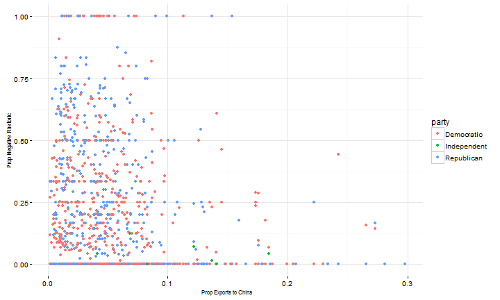
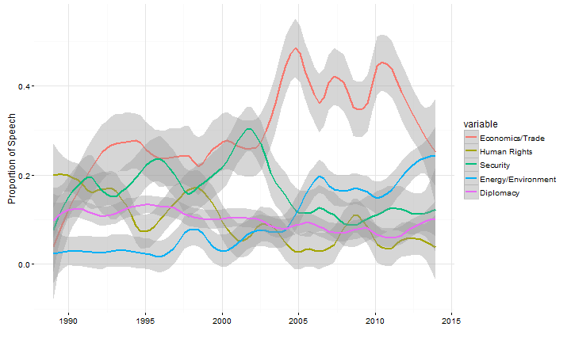

- Principles of "Tidy Data"
- Data cleaning steps for one of my projects
Jen Haskell
Stanford Applied Statistics Society
Real world data is messy -- very messy
50-80% of data science work is data cleaning/data wranging/data munging (2014 New York Times Article)
Sometimes data can be really messy (An extreme example)
Embrace it: automating data cleaning can be a fun programming challenge
A concept described by Hadley Wickham, official R wizard
Three simple principles:
1. Each variable forms a column
2. Each observation forms a row
3. Each type of observational unit forms a table
Getting to tidy data:
## State X1999 X2000 X2001 X2002
## 1 UNITED STATES 13117677381 16253029349 19234827272 22127790292
## 2 Washington 2040480542 1900659005 2928721420 3922748622
## 3 California 2394723120 3546020626 4676055993 4482780949
## 4 Texas 899734807 1452319128 1577843301 2051551556
## 5 Louisiana 663751021 1064073172 682723378 781372522
## Source: local data frame [6 x 5]
##
## State Payroll NA Contract awards
## (chr) (chr) (chr) (dbl)
## 1 NA Total Active Duty Military NA
## 2 United States 195170178.000000 84459939.000000 303355386
## 3 NA NA NA NA
## 4 Alabama 4723956.000000 1254790.000000 9501617
## 5 Alaska 2659561.000000 2077719.000000 2180004
## 6 Arizona 3137634.000000 1262572.000000 12064904
## Variables not shown: Grants (dbl)
What do U.S. politicians say about China and why?
Use congressional speech and see what predicts negative speech about China
Three data frames:
-Speech-senator data frame
-Senator-year data frame
-State-year data frame
What do U.S. politicians say about China and why?
Use congressional speech and see what predicts negative speech about China
Three data frames:
-Speech-senator data frame
-Senator-year data frame
-State-year data frame
speeches <- read_file("data/109-boxer-ca.txt")
<DOC>
<DOCNO>109-boxer-ca-1-20050207</DOCNO>
<TEXT>
Mrs. BOXER. Madam President, may I ask what is the order at the current time?
</TEXT>
</DOC>
<DOC>
<DOCNO>109-boxer-ca-2-20050207</DOCNO>
<TEXT>
Mrs. BOXER. Does one have to ask unanimous consent to go past the 10 minutes?
</TEXT>
</DOC>
speeches <- unlist(str_split(speeches, "\n*</TEXT>\n*</DOC>\n\n<DOC>\n<DOCNO>")) #stringr
speeches <- unlist(str_split(speeches, "</DOCNO>\n<TEXT>\n*"))
speeches <- matrix(speeches, nrow = length(speeches)/2, ncol = 2, byrow = T)
speeches[1,1] <- str_sub(speeches[1,1], 14, -1)
info <- unlist(str_split(speeches[,1], "-"))
info <- matrix(info, nrow = length(info)/5, ncol = 5, byrow = T)
head(info)
## [,1] [,2] [,3] [,4] [,5]
## [1,] "109" "boxer" "ca" "1" "20050207"
## [2,] "109" "boxer" "ca" "2" "20050207"
## [3,] "109" "boxer" "ca" "3" "20050207"
## [4,] "109" "boxer" "ca" "1" "20060309"
## [5,] "109" "boxer" "ca" "2" "20060309"
## [6,] "109" "boxer" "ca" "3" "20060309"
Matching
dw <- dw %>% select(congress, state_code, district, state, party, name, first_d) %>%
filter(str_detect(name, "KERRY")) %>% arrange(congress)
head(dw, 10)
## Source: local data frame [10 x 7]
##
## congress state_code district state party name first_d
## (dbl) (dbl) (dbl) (chr) (dbl) (chr) (dbl)
## 1 99 3 0 MASSACH 100 KERRY J -0.372
## 2 100 3 0 MASSACH 100 KERRY J -0.373
## 3 101 3 0 MASSACH 100 KERRY JOHN -0.375
## 4 102 3 0 MASSACH 100 KERRY JOHN -0.376
## 5 103 3 0 MASSACH 100 KERRY JOHN -0.378
## 6 104 3 0 MASSACH 100 KERRY JOHN -0.379
## 7 105 3 0 MASSACH 100 KERRY JOHN -0.381
## 8 106 3 0 MASSACH 100 KERRY JOHN -0.382
## 9 107 3 0 MASSACH 100 KERRY JOHN -0.384
## 10 108 3 0 MASSACH 100 KERRY JOHN -0.385
head(trade[1:3,1:5])
## State X1999 X2000 X2001 X2002
## 1 UNITED STATES 13117677381 16253029349 19234827272 22127790292
## 2 Washington 2040480542 1900659005 2928721420 3922748622
## 3 California 2394723120 3546020626 4676055993 4482780949
trade <- melt(trade, id.vars = "State") #reshape2
trade <- trade %>% select(state = State, year = variable, total_exp_world = value) #dplyr
head(trade[1:3,1:3])
## state year total_exp_world
## 1 UNITED STATES X1999 13117677381
## 2 Washington X1999 2040480542
## 3 California X1999 2394723120
## Source: local data frame [5 x 4]
##
## State Payroll NA Contract awards
## (chr) (chr) (chr) (dbl)
## 1 NA Total Active Duty Military NA
## 2 United States 195170178.000000 84459939.000000 303355386
## 3 NA NA NA NA
## 4 Alabama 4723956.000000 1254790.000000 9501617
## 5 Alaska 2659561.000000 2077719.000000 2180004
cnames <- c("state", "payroll", "payroll_activeduty", "contracts", "grants")
colnames(mil_spending) <- cnames
mil_spending <- mil_spending[c(4:11, 13:54),]
mil_spending[,2:5] <- sapply(mil_spending[,2:5], as.numeric)
head(mil_spending[1:3, 1:5])
## Source: local data frame [3 x 5]
##
## state payroll payroll_activeduty contracts grants
## (chr) (dbl) (dbl) (dbl) (dbl)
## 1 Alabama 4723956 1254790 9501617 66056
## 2 Alaska 2659561 2077719 2180004 48783
## 3 Arizona 3137634 1262572 12064904 105948
## X Contract X.1 PERSONNEL
## 1 STATE awards 1 Payroll (1,000) STATE
## 2 (mil. dol.) (mil. dol.) CivilianMilitary
## 3 U.S. . . 109,408 99,794 732.0 1,056.1 MO . . . . . .
## 4 AL . . . . . . 1,838 2,183 22.0 14.6 MT . . . . . .
## 5 AK . . . . . . 565 879 4.4 16.6 NE . . . . . .
## 6 AZ . . . . . . 2,911 1,865 8.8 21.8 NV . . . . . .
## Contract.1 X.2 X.3 PERSONNEL.1
## 1 awards 1 Payroll NA (1,000)
## 2 (mil. dol.) (mil. dol.) NA Civilian Military
## 3 7,093 1,630 NA 15.8 14.6
## 4 91 298 NA 1.1 3.7
## 5 322 711 NA 3.7 9.4
## 6 285 777 NA 2.2 7.8
Two datasets:
To work with the data:

